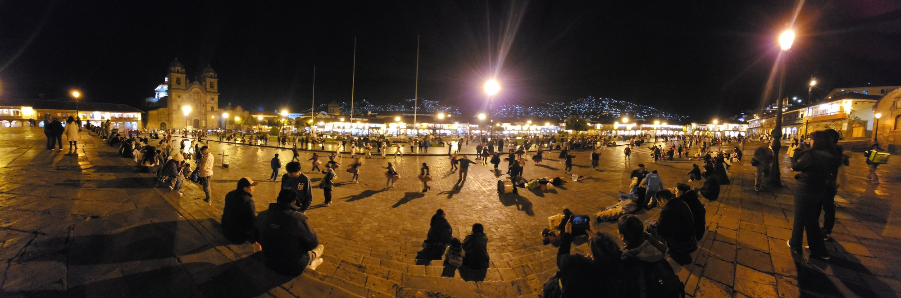
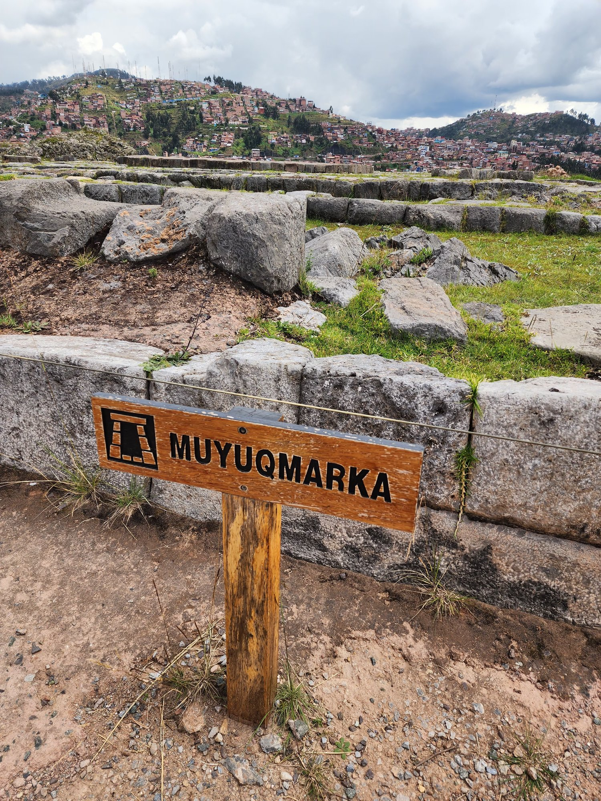
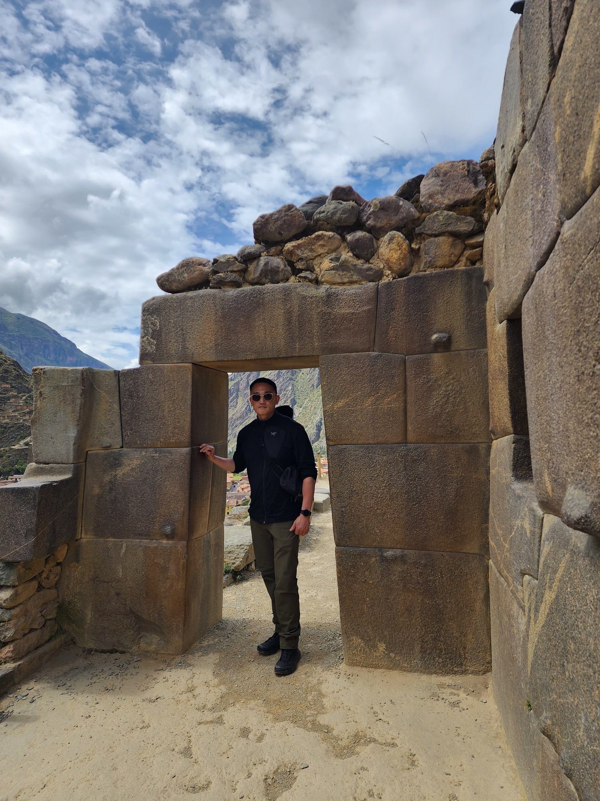
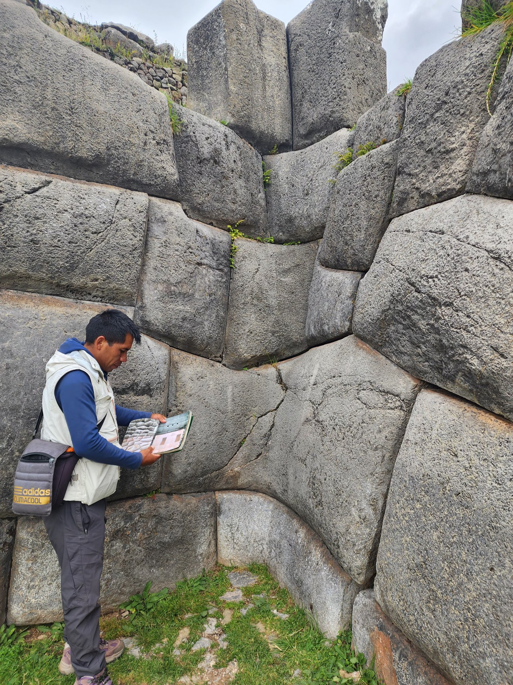
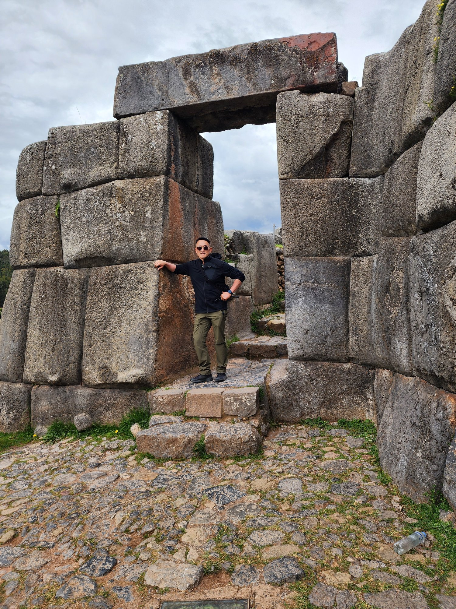
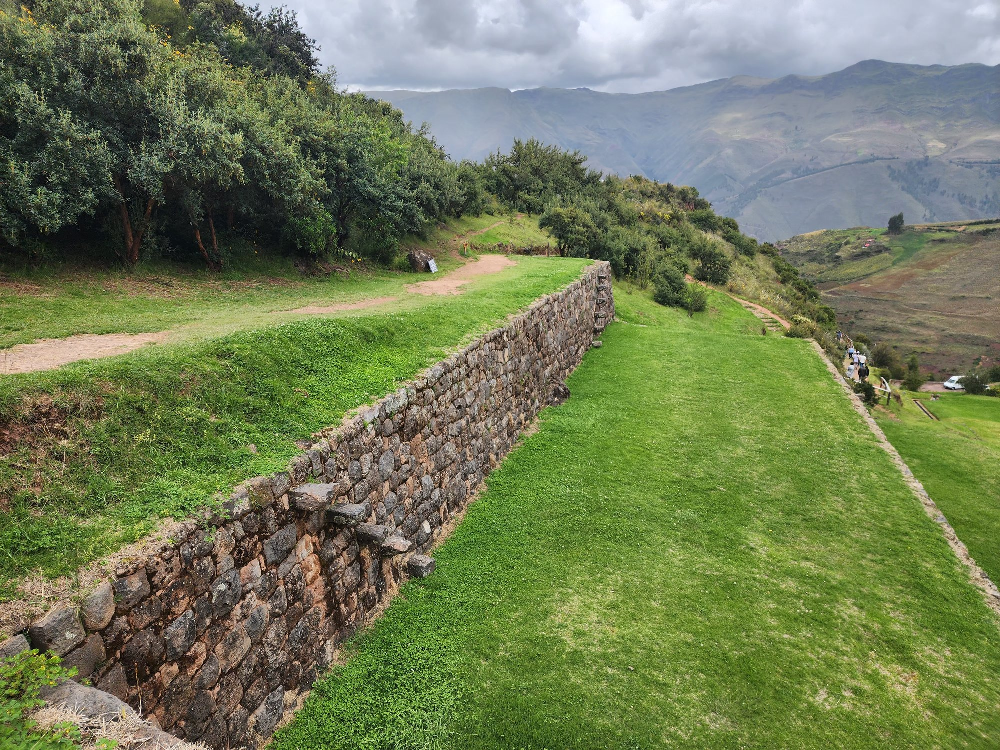
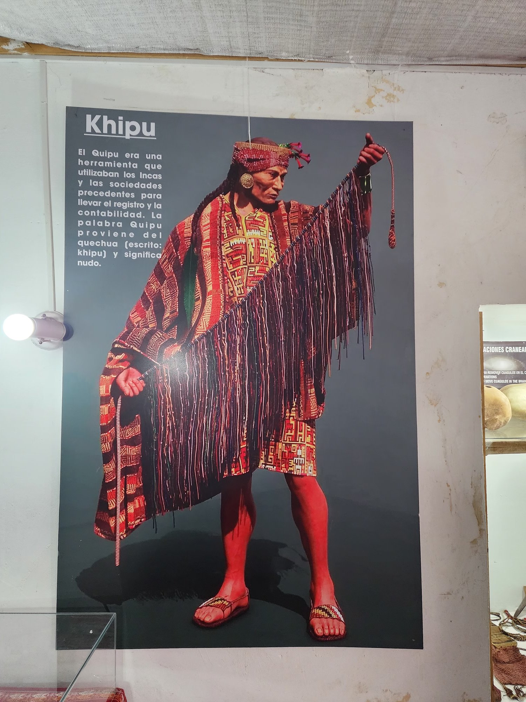
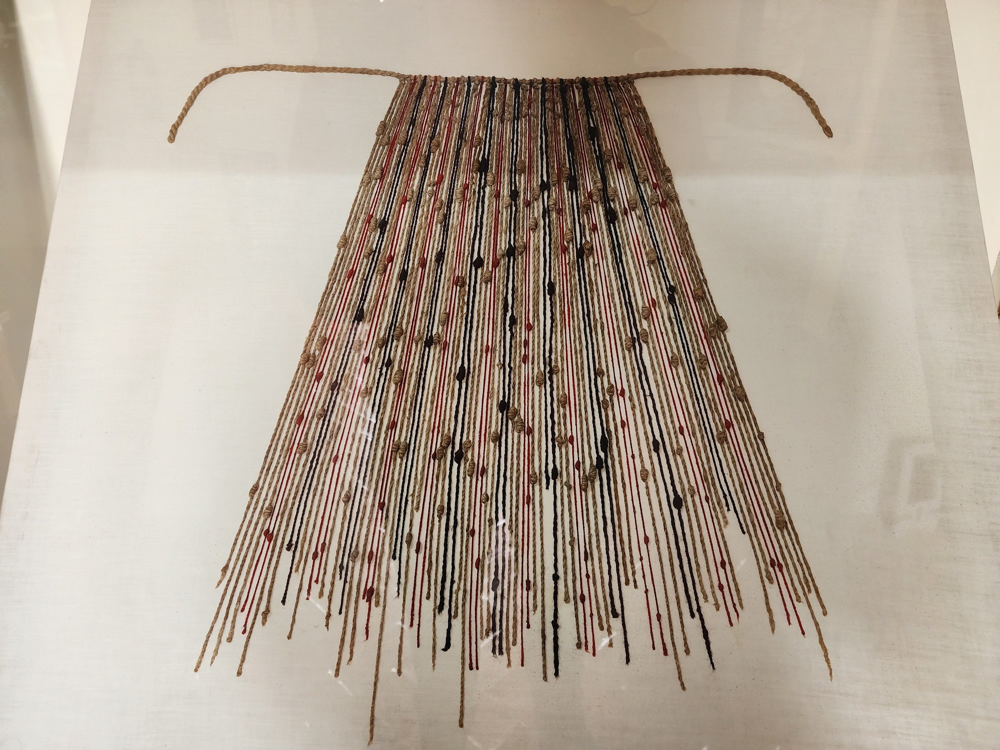

The hotel manager looked at my face once, glanced down at my running shoes, and asked again.
"You're walking all the way to Sacsayhuamán?"
"Yes."
"Take a taxi. It's uphill."
"I'd like to try walking."
He paused, tilted his head slightly, and began to draw me a small map. With the tip of his pen he traced the route from the Plaza de Armas, past the church of San Cristóbal, up a narrow stairway between alleys. About an hour, he said. The elevation gain was only about two hundred meters, but Cusco itself sits at 3,400 meters. He meant: you'll be out of breath. I nodded, took the map, and folded it.
This morning is in fact my first day exploring Cusco itself. I had arrived in the city a few days earlier in the predawn hours, but — without time to unpack — I had boarded a train that very day for Machu Picchu. I hadn't been able to buy tickets in advance, so I had to find them on the spot. On the way, the bus dropped me at a small town called Ollantaytambo, where I changed to the train. Its alleys and stone streets were so beautiful that I decided then and there to spend a night there on the way back. After Machu Picchu I did exactly that, sleeping one night in Ollantaytambo, and the next day, on the way to Cusco, I also visited Moray and Maras. Having first walked the Sacred Valley, only now do I see the heart of Cusco itself. And it is no accident that I have chosen Sacsayhuamán as my first destination. The enormous stones perched above this city — I wanted to see them, in person, before anything else.
I could feel the manager's gaze still on my back. Most tourists take a taxi or a tour bus. They step out briefly in front of the ruins on the hill, listen to a guide for thirty minutes, and climb back into the bus. A Korean man insisting on walking up must have looked a little strange to him.
I cannot fully explain, even to myself, why I chose to walk. Only this: in the decades I have spent moving in and out of various Indigenous communities, I have learned that some places will not speak to you unless you arrive on foot. The land shows a different face to a person stepping out of a car than to one coming with their feet on the ground. This is not mysticism, but a question of the senses. A body that has climbed for an hour, breathless, is not the same body as one that simply arrived. The difference reveals itself the instant you see the ruins.

So I walked.
Past the church of San Cristóbal, the road narrowed sharply. Along the Inca-era stone walls, the whitewashed walls of the Spanish colonial period had been laid on top. The lower meter or two were polygonal Inca masonry, precisely interlocked; above them, crooked brick and white plaster. Five hundred years ago, after the Spanish seized the city, they pulled down what stood and built their own buildings on the foundations beneath. Two civilizations' time was folded into a single stone. And the Inca stone below looked, strangely, far straighter and harder than the Spanish wall above.
The steps were steep, the stones slick. Every five paces I had to stop, out of breath. The lungs would not fill. The body knows before the mind that the air carries less oxygen. Just as the Plains Cree (nêhiyawak) had breathed their winds for thousands of years, the Quechua had breathed this thinner wind for thousands of years. A high-altitude body builds a high-altitude worldview. To feel this required no explanation.
The stairs ended and the road turned to pavement. After another twenty or thirty minutes of gentle climbing, my view suddenly opened.
The first moment I stood before it, I had no words.

I had read about it in books. I had seen it in photographs. I had watched documentaries more than once. I believed I already knew a great deal about this place. That Pachacútec ascended in 1438 and began to expand the empire, that his successors Túpac Inca Yupanqui and Huayna Cápac brought the empire to its zenith. That construction of Sacsayhuamán began in the mid-fifteenth century and continued across a hundred years. That a single stone could weigh more than a hundred tons.
And yet, standing before it, none of that prior knowledge mattered.
The enormous stones were in front of me.
The largest was about five meters high and weighed roughly 120 tons.¹ The weight of about twenty young African elephants. And there were dozens of stones like that, not one. Each had a different shape. Not cubes, not rectangular blocks, but twelve-sided, sixteen-sided. Each stone cut to its own form, and each interlocking perfectly with its neighbor. Not even a sheet of paper could be slid between them. A blade can't enter, the guidebook said. I ran my finger along the seam between the stones. It was true.

And there were three such walls, in zigzag formation, totaling about four hundred meters in length.²

I could not lift my hand from the stone. Its surface was cold. Slightly rough, but the corners were astonishingly smooth. After five hundred years of wind and rain.
An old story I had heard from guidebooks and documentaries came back to me. That the Inca knew how to soften stone. That a mixture of stomach acid from llamas and alpacas, combined with certain herbs, could turn the surface of a stone clay-soft. In that condition, you could shape and carve as you pleased.³ Whether this is scientifically verified or only oral legend, I cannot say. The scholarly community is still arguing. But standing before these stones, you find yourself wanting to believe even such a story. Because no other explanation will do.
I climbed higher. At the very top, I read, there had once stood three immense towers and a sun-worship platform. Now only the dim outline in stone remains. Throughout the sixteenth century the Spanish dismantled Sacsayhuamán methodically. Stone by stone they pried it apart and used the blocks to build the cathedrals and mansions of central Cusco. Sacsayhuamán became, in effect, the quarry of the colonial city. Scholars estimate that a substantial portion of the original structure — perhaps as much as two-thirds — was lost in this process.⁴ The massive walls we see today are only what survived.


What had it looked like, originally.
The question would not leave my head. Meanwhile the sky darkened sharply. Andean afternoons are mercurial. At more than three thousand meters, clouds gather quickly and disperse quickly. Before long, a heavy rain began to fall.
The tourists fled at a half-run. Guides opened umbrellas and gathered their groups. The shutter sounds stopped. People streamed toward the tour buses like a tide. Within ten minutes, the rain had thinned, and Sacsayhuamán was nearly empty.
I moved into the shadow of the wall to take shelter. The stone, wet, had turned a deeper gray. Mist rose and blurred the upper reaches of the ramparts. The city of Cusco lay spread below me, but the clouds had erased half of it. A landscape half-erased. And in that landscape, only I and these stones remained.
This was the moment. The questions began to surface, one by one.
The first question. Where did these stones come from.
The largest limestone blocks at Sacsayhuamán were quarried from the fortress hill itself, transported relatively short distances. But the finer andesite blocks were hauled from the Rumiqolqa quarry, about thirty-five kilometers southeast of Cusco. Across mountainous terrain. Across valleys. Without wheels. The Inca did not use the wheel. Children's toys with wheels have been excavated, showing they understood the principle, but they did not adopt it for transport.⁵ Why not. This too is among the riddles still unsolved.
The second question. How did they move them.
A hundred-ton stone. Up a mountain. Without wheels. Without iron tools. Mainstream scholarship credits a combination of human labor, ropes, log rollers, and ramps.⁶ The same principles as the Egyptian pyramids. But Andean terrain is not Egyptian plain. They had to cross gorges, sheer slopes, rivers. Chronicle records say a single stone took hundreds of people weeks, sometimes months, to move.
The third question. How were they cut at these angles.
The precise polygonal interlock. With nothing but bronze tools. The earlier-mentioned legend of stomach acid and herbs is not a verified hypothesis in mainstream science. Jean-Pierre Protzen of Princeton, through experimental archaeology, demonstrated that this kind of precision is possible with a process of repeated testing, cutting, and fitting.⁷ Place two stones together, see where they touch, shave a hair off one, place again, check again, shave again — repeated dozens of times. A single stone might have taken months.
The fourth question. Who did this work.
The names are gone. Most Inca chronicles were written after the Spanish conquest, and not a single line survives recording the names of the artisans who built these megaliths. Tens of thousands of people. Across decades. Anonymous. Their sweat is in every stone, but the names of the sweat's owners have vanished.
And the fifth question. The most fundamental.
Why, in only a hundred years?
Anyone who knows even a little Inca history is startled by this question. The Inca kingdom began to expand from a small polity around Cusco into an empire only with the accession of the ninth emperor, Pachacútec, in 1438.⁸ And Francisco Pizarro of Spain seized Cusco in 1533.
Ninety-five years.
In that time, the Inca took control of a territory of roughly two million square kilometers, from southern Ecuador to central Chile, from the Pacific coast to the western edge of the Amazon.⁹ It took the Roman Empire about five hundred years to reach that scale. Even the Mongol Empire took more than a hundred. The Inca did it in ninety-five.
And what was built in those ninety-five years was not Sacsayhuamán alone. Ollantaytambo. Pisac. Machu Picchu. Coricancha. The rebuilding of Cusco itself. About forty thousand kilometers of road network — including the very stone path I have just walked up. And not even all of that. Hundreds of administrative cities large and small, temples, reservoirs, agricultural terraces were raised in the same period. And all of this was accomplished without writing, without the wheel, without iron.
Of course, the Inca did not begin from zero. The ninety-five years they flowered are the final chapter of roughly 2,400 years of Andean civilizational history. Beginning with the temple culture of Chavín in the ninth century BCE — passing through the textiles and earth drawings of Paracas and Nazca on the southern coast, the ceramics and metalwork of Moche on the northern coast, the great empires of Tiwanaku and Wari on the central highlands, the urban civilization of Chimú that unified the northern coast — and arriving at last in the mid-fifteenth century with the Inca. The basic grammar of terraces, canals, roads, textiles, metallurgy, and astronomy that the Inca used was inherited from these earlier civilizations. The Inca achievement is not a feat raised from nothing, but the final completion laid atop a 2,400-year accumulation. And yet — the scale and speed and organizational power of that completion was a level no previous Andean civilization had reached.
This was the question that stopped me.
The rain stopped completely, and the late-afternoon sun began to angle in through gaps in the clouds. The wet stones gleamed like metal. I had been on this spot for three hours. I had no tour schedule, no next appointment. I simply wanted to think in front of these stones.
I had read a great deal already. Books on Inca civilization, archaeological papers, travel accounts. I thought I was prepared. And yet, before these stones, I realized how much I had not known. I had known the numbers, the dates, the names — but they had not become sense. Not until I saw them in person.
And the moment they became sense, the theoretical question shifted into an existential one.
"How was it possible" becomes, finally, "what kind of society made it possible." And that question becomes, in turn, "can we even imagine such a society."
Because contemporary Korea cannot make such a thing. Neither can contemporary North America, nor contemporary Europe. We have the technology but lack the organization. We have the resources but lack the agreement. We have many clever individuals, but as a collective we have lost the ability to raise one immense thing across a hundred years. Suwon Hwaseong was completed in two and a half years, but a sustained construction across a generation is something hard to find in the world today.
What did the Inca have, that allowed them to do it?
This is the first question this book asks.
And this question will take me to places I had not anticipated. To Descartes. To Valladolid. To Potosí. To the buffalo bones of the Canadian plains. To the Japanese arquebus and the Korean panokseon. And finally — to the conversation I am having tonight with the AI I have left running on my laptop to help me write this very page.
For now, though, I am still in front of this stone.
The question "how, in just ninety-five years?" conceals a trap. It quietly assumes that the Inca created something out of nothing. That geniuses dropped from the sky and suddenly began stacking megaliths.
The truth is otherwise.
The Inca stood on thousands of years of accumulation.
The Andes are one of the four independent cradles of human civilization.¹⁰ The Fertile Crescent of the Middle East, the Yellow and Yangtze of East Asia, the Indus and Ganges of South Asia, and the Andes. In each of these four regions, agriculture and cities and pre-literate complex societies arose independently. Without influence from the others.
The oldest complex society in the Andes is Caral. Located in the Supe Valley on the central coast of Peru, this site dates to around 2600 BCE. Roughly the same age as the Pyramid of Giza. Massive ceremonial centers, stepped pyramids, complex canal systems already existed there. And from there to the Inca, another four thousand years would pass.
In those four thousand years, many civilizations rose and fell in the Andes. Chavín. Paracas. Nazca. Moche. Each left an inheritance for the Inca. Two of these are usually considered the Inca's most direct predecessors. Tiwanaku and Wari.
Tiwanaku is the civilization that flourished south of Lake Titicaca in present-day Bolivia, between roughly 300 and 1100 CE.¹¹ Among its ruins, the stones of Pumapunku have stunned me more than once. Not polygonal stones, but blocks cut precisely in the shape of an H. The very stones internet conspiracy theorists love to claim were "built by aliens."
The conspiracy theories are baseless, of course. But the technical wonder is real. These stones are the direct ancestors of Inca Sacsayhuamán. The same polygonal interlock principle, the same precision. The styles differ. Tiwanaku is geometrically severe; the Inca flow more organically. But the memory of the hand is continuous.
When Tiwanaku fell, its techniques did not vanish. They were carried on through the descendants of artisans, through families they married into, through the chain of master and apprentice. By the time the Inca appeared at the tail end of that lineage, the way of working stone was already alive as the language of the body. The Inca did not invent it. They inherited it.
Wari is the civilization that flourished in the central Peruvian highlands between roughly 600 and 1000 CE.¹² I once visited the ruins of Pikillaqta, an hour's drive south of Cusco. It was an administrative city of the Wari.
Pikillaqta is utterly different from any Inca city. Where Inca cities flow organically with the terrain, Pikillaqta is laid out in straight grids, like Rome. Hundreds of identical rooms, aligned. The shape of a society that had felt the need for mass administration.
The Wari left the Inca two things. One was the road network. The Wari road system was the prototype of the Qhapaq Ñan. The other was administrative technique. The methods of governing wide territory from a center, the warehouse system, indirect rule through local leaders — all of this was tested in Wari and completed in the Inca.
The originality of the Inca lies not in "creating things that did not exist before." It lies in converging scattered things into a single imperial system.
The stoneworking of Tiwanaku. The roads and administration of Wari. The metalwork and irrigation of northern coastal Chimú. The botanical knowledge of the Amazon frontier. The textile traditions of the highland villages. All of this came to a single point in Cusco.
The Inca created the social force that made this convergence possible. The authority to gather scattered techniques, the organization to apply them at imperial scale, and — moving that organization — the logic of relation.
Which leads to the second question. By what means did the Inca move people.
The answer is Mit'a.
Mit'a means "turn" in Quechua.¹³ The word itself says a great deal. This was a rotation system. Every adult man had to take his turn participating in the public works of the state. Usually about sixty to ninety days a year. The turn would come around several times in the course of a lifetime.
To the modern ear this sounds like forced labor. And there was a coercive element. You could not refuse. To refuse was to refuse the community and the entire state. This much must be made clear. The Inca Empire was not a utopia.
But coercion alone does not complete the description. Because this system actually worked. Worked well enough to build a 200-million-square-kilometer empire across ninety-five years. And several chronicle accounts show that the mit'a had a character distinct from simple exploitation.
To those who participated in the mit'a, the Inca state offered a number of things.¹⁴
First, food. Generous daily rations. Maize, potatoes, dried meat (charqui), the highland grain quinoa. Often better fare than they had at home.
Drink was provided too. Chicha, a mild fermented maize beer. The crucial point is that chicha was not a simple drink but a ritual one. A drop was poured to the ground for Pachamama (Mother Earth) before drinking. Sharing chicha together was a communal act.
Clothing was provided as well, to replace garments worn out during labor. For men far from home this was something more than mere practicality.
And the most important thing — family support. While a man was on his mit'a, the livelihood of the family he had left behind was guaranteed by the community (the ayllu) and the state. Without this, mit'a would have meant the collapse of families. Because of this guarantee, a man could leave for his turn without dread.
When the labor was done and he returned home, gifts were given. Textiles, tools, sometimes new crop seeds. The body that had served the empire did not return empty-handed.
Pedro Cieza de León was a Spanish chronicler who travelled through Peru in the 1540s. His Crónica del Perú is a primary source written just after the fall of the Inca, when the memory of the conquest was still fresh. One of his descriptions:
"Tens of thousands of them gathered to drag the great stones up, and it was not labor of pain but something like a festival. Songs and the beat of drums never stopped, and they shared chicha as they sweated. Each time a stone was set in place, a great shout went up. There was pride in their faces."¹⁵
How are we to read this. Cieza writes from the position of conqueror. He may have romanticized what he saw. Conversely, he may have honestly recorded a scene that his own value system could not comprehend.
What strikes me is that he chose the words "like a festival." If this had been the site of forced labor, he would have had no reason to use such a phrase. Other chroniclers (Garcilaso de la Vega, Juan de Betanzos, and others) left similar descriptions.¹⁶ It would be strange to suppose all of them were lying.
Then the labor of the mit'a was folded together with festival. The construction site was at the same time the site of religious ritual, of competition between communities, of marriages being arranged. People ate and drank and sang as they raised stone. That experience generated pride and belonging.
This is not the labor we know after the Industrial Revolution. The labor of clocking into the factory, moving like a part, drawing wages and clocking out. For modern people, labor is something outside of life. For the Inca, mit'a was part of life. More precisely, it was the act by which one proved and reinforced one's membership in the community.
And yet a dark future was waiting for the mit'a.
After conquering the Inca, the Spanish inherited the mit'a system in their own way. They borrowed only the name. The form was kept, but the content was completely changed. The festival vanished. The chicha and the food and the gifts vanished. The guarantee of family support vanished. What remained was forced labor and nothing else.
And from the mid-sixteenth century onward, that forced labor was directed toward the silver mines of Potosí.
Potosí is the great silver vein of Bolivia, discovered in 1545. How that silver would change subsequent world history is a subject for chapter eleven. What concerns us here is that the Spanish used the mit'a to drive Indigenous men into the underground tunnels of Potosí. For several months a year, men descended into the dark beneath the mountain and dug silver while being poisoned by mercury. The rate of return home was low. Those who did return came back with their lungs ruined. Across one century, millions died this way.
This is one of history's cruelest paradoxes. An instrument of relational cooperation was transformed into an instrument of extractive slaughter. Two systems with the same name did exactly opposite things.
What was different? The form was the same. A rotation that mobilized people. But the relation within that form had changed. Was there a festival or not? Was there food and drink or not? Were families protected or abandoned? Could one return, or not?
The same labor, performed within different relations, becomes an entirely different thing.
This is the first lesson the mit'a leaves us. And this lesson asks us to ask what twenty-first-century capitalism is wrapping under names like "flexible work" or "autonomous labor" or "entrepreneurial spirit." The form may be free. But the relation?
I carry this question into the next section. Into how the Inca governed an empire without writing.
In the Museo Inka in Cusco, several khipus are on display. At first they look unassuming. From a single thick cord, a number of finer cords hang down, and each cord has several knots tied along its length. The colors vary. Reddish brown, white, black, blue. The lengths vary too. Some are about twenty centimeters; some are nearly more than a meter long.
This was the Inca's writing.


To be precise, it was something difficult to call writing. The writing we know transposes spoken language into visual signs. The khipu does not. With knots, color, and twist, it carried information itself. Not the sound of language, but what language pointed to.
The basic unit of the khipu is the knot.¹⁷ There are three kinds. The simple knot, the long knot, and the figure-eight knot.
Position determined place value. The lowest position was ones, above that tens, above that hundreds. A decimal system. This means the Inca had independently developed another decimal system in human history. Before Europe adopted Arabic numerals.
Color denoted category. Reddish brown for soldiers, white for silver, yellow for gold, blue for a particular crop. Like that. But the meaning of color may have varied across regions and times. It has not been fully decoded.
The direction of twist (Z-twist versus S-twist) and the spacing between cords also carried meaning. Which is to say, a single khipu held at least five dimensions of information at once — knot type, knot count, knot position, cord color, cord twist direction.
This is why modern scholars call it a high-dimensional information system.¹⁸
The khipu was not read alone. It required a hereditary class of specialists called Quipucamayoc. They held the khipu in their hands and unfolded its content orally.
That is to say, the khipu was not a complete record but a memory aid. The khipu did not contain everything in itself; it became complete only when joined with the trained memory of the quipucamayoc. This is a wholly different principle from Western writing. Western writing, in theory, can be read by anyone (so long as they know the letters). The khipu could be read only by those who had been trained.
A flaw? No. This was a way of making responsibility for information explicit. Record and interpreter must coexist for meaning to stand. And the interpreter must be a responsible being within the community. There can be no anonymous document. Every record has a name.
This principle reverberates strangely in the age of AI. An age in which anonymous data pours forth, in which information whose owner cannot be named drives algorithms. The Inca had attached a face to their information.
For a long time, Western scholars regarded the khipu as a simple calculation tool, a kind of primitive accounting ledger. Recording numbers only.
Recent research is overturning this view.
Gary Urton of Harvard, in his 2003 book Signs of the Inka Khipu, proposed the hypothesis that the khipu could carry narrative information.¹⁹ That combinations of knots could correspond to syllabic or conceptual units. The digital database project his team has been running since 2005 has been finding repeating patterns across khipus from different regions. If this is evidence of grammar, the khipu could record far more than we had thought.
In 2017, Manuel Medrano, then an undergraduate at Harvard, compared two khipus found in the village of San Juan de Collata in northern Peru with the village's genealogical records, and proposed the possibility of even reading personal names from them.²⁰ The research is ongoing and not without dispute. But the direction is clear. The khipu could carry more than we know.
And yet most of it has been lost.
In 1583, the Third Council of Lima, Catholic clergy designated the khipu as "an instrument of idolatry."²¹ This unintelligible record system, not fitting Church doctrine, was declared a work of the devil. Over the following decades, organized burnings followed.
How many khipus burned, no exact number is known. Only estimates. Tens of thousands, or more. Administrative records, history, perhaps literature, accumulated across the entire empire. All became ash.
About 1,400 khipus survive today.²² Most are scattered across museums and private collections. And most are still undeciphered.
I lingered for a long time over one of them at the Cusco museum. Inside a glass case, red cords and white cords and black cords held their knots. Someone had recorded something on those cords. A census, maybe. A harvest yield. Or someone's name. Or perhaps the memory of a war. I do not know. The meaning of those knots vanished along with the person who tied them and those who could read them.
What we lost is not artifacts. It is a way of thinking.
If the khipu was the language of information, the chaski was the leg that moved it.²³
The chaski were relay runners. Young men trained to sprint a particular stretch and hand the message (often a khipu) to the next chaski, who ran the next stretch. At each interval was a rest house called a chaskiwasi.
The speed of this system was astonishing. From Cusco to present-day Quito in Ecuador is about two thousand kilometers as the crow flies. Following the road, it is farther. The chaski covered this distance in five days. More than four hundred kilometers a day on average. A communication speed that no empire on earth would match until the seventeenth century. Faster than the Roman cursus publicus.
What the chaski carried was not only documents. Fresh fish, too. Fish caught on the Pacific coast were on the emperor's table in Cusco within two days. In a high-altitude city at 3,400 meters, the emperor ate fresh sashimi for breakfast. What this symbolizes is not luxury. It is the fact that a single empire moved as a single organism.
The khipu and the chaski. With these two, the Inca were able to integrate twelve million people across two million square kilometers into a single system. Without writing. Without wheels.
The Eurocentric claim that "without writing, you are barbaric" collapses before this fact.
The bloodstream of Inca civilization was the road.
Qhapaq Ñan, "the King's Road," this network reached a total length of about 40,000 kilometers.²⁴ In the north it began in southern Colombia; in the south it extended down to near Santiago in central Chile. Almost half of the way around the planet. And this road runs across six modern countries. Colombia, Ecuador, Peru, Bolivia, Argentina, Chile. In 2014 it was inscribed as a UNESCO World Heritage Site jointly by these six nations.²⁵
Qhapaq Ñan consisted of two trunk lines. One was the Coastal Road, following the shore; the other was the Highland Road, following the spine of the Andes. Hundreds of branches connected the two trunks. East to west, coast to mountains, mountains to Amazon.
The road's construction varied with terrain. On flat ground, it was simply a packed earth road. On slopes, stone steps were laid. Some sections were paved roads two meters wide. On steep cliffs, stones were stacked to make artificial terraces. Where rivers had to be crossed, suspension bridges were built. Massive ropes woven of llama wool and agave fiber, anchored on either side of the gorge, with planks laid across. Each year the community gathered to replace the ropes. This tradition is still kept up today at the Q'eswachaka bridge in Peru. Each June, villagers gather to cut down the old rope and weave new ones. A 500-year-old ritual.
Two kinds of facilities were built along the road at regular intervals.
Tambo were rest houses. Usually one every twenty kilometers or so — a day's journey. Travelers ate and slept there. The tambo was not an inn but a state facility. Its use was largely restricted to those traveling on official business.
Qolqa were storehouses. Built at high elevations to maintain cool temperatures, they had air channels so the grain inside would not rot. Years' worth of maize, potatoes, quinoa, dried meat, and textiles were stored in the qolqa. In times of poor harvest these were opened. The Inca regarded famine as a state responsibility. If a region's crop failed, food moved from the qolqa of another region. That movement, too, traveled along the Qhapaq Ñan.
The road was the empire's vein and nerve. Goods flowed, information moved, armies marched, famines were relieved, cultures circulated.
A moment of comparison: the Roman Empire's celebrated road network was about 80,000 kilometers. The Inca built half that length in far harsher terrain, in far less time. And much of this road is still in use today. Farmers in present-day rural Peru walk 500-year-old Inca roads as part of daily life. The morning road to market, the road to the next village. Where Roman roads have become museum ruins, the Qhapaq Ñan is still active duty.
Now we arrive at this chapter's central thesis.
The question I had carried away from Sacsayhuamán — "how, in only ninety-five years?" — begins, slowly, to find its answer.
The answer is not the invention of technology.
There is no evidence that the Inca invented any particularly new technology. Megalithic stoneworking? Inherited from Tiwanaku. The road network? Inherited from Wari. Irrigated agriculture? Inherited from the northern coastal civilizations. Astronomical observation? Inherited from thousands of years of Andean tradition.
What the Inca did was something else.
They created a new way of organizing people.
This is the central proposition of this chapter. For the Inca, technology was social organization, and social organization was technology. The two were not separated.
Modernity took the opposite road.
Since the Industrial Revolution, humanity has handed more and more work over to machines. The steam engine replaced human muscle. The computer replaced human calculation. Robots replaced factory labor. Now generative AI tries to replace part of human creation.
Within this trajectory, the human being became more and more a replaceable variable. Management science coined the phrase "human resources." The human became one resource among others. And resources are replaced when technology advances.
The achievements of this model are clear. Productivity has increased manyfold. Material plenty has spread as never before. Average life expectancy has doubled. But at the same time, we have lost the ability to do great things together.
South Korea is a developed country of fifty million people, with one of the world's top-ten economies. And yet we cannot do the work of a single generation cooperating to raise a hundred-year structure. Every project is interrupted or transformed by construction supervision, budget, contract, lawsuit, change of regime. Individual buildings have grown larger and more complex, but the capacity to build a common monument has vanished.
This is one outcome of replacing people with technology. Individual capacity has been amplified, but the long-term continuity of the collective has weakened.
The Inca model was the opposite.
They had technology, but it was simple. Bronze. Stone tools. Log rollers. Rope. With this level of technology they raised hundred-ton stones up a mountain and built a two-million-square-kilometer empire. How was it possible?
Because the way of organizing people was itself the technology.
Three things in particular.
First, mit'a. Not dispersed individual labor, but collective labor gathered by rotation. And that collective labor, fused with festival and ritual, gave rise to voluntary engagement.
Second, khipu and chaski. An information system that allowed center and province to communicate in something close to real time. Without this, cooperation across two million square kilometers would have been impossible.
Third, Qhapaq Ñan and qolqa. The system of physical movement and resource reserves. The network through which the resources of one region could move when another region was struck by famine.
These three together made one immense social machine. A machine made not of metal parts but of people. And it ran for ninety-five years.
What testifies most clearly to this thesis is Sacsayhuamán itself.
The fifth question I posed at the start of this chapter — "why in only ninety-five years?" — answers itself in this way: because Inca society was able to cooperate sustainably for ninety-five years. Technology did not make it possible. Relation made it possible.
And the evidence of that relation is in the stones themselves.
One field observation is intriguing. In the Sacsayhuamán walls, the working technique on the largest stones is identical to that on the smallest stones.²⁶ Why does this matter?
The internet is full of pseudoscientific claims, such as: "a pre-Inca civilization of giants stacked the great stones, and the Inca placed the smaller stones on top." The scale of Sacsayhuamán is so overwhelming that some suspect "the Inca couldn't have done it."
But field observation does not bear this out. Whether large stone or small, all are cut with the same polygonal interlock technique. The treatment of the corners is the same. The texture of the surface is the same. If a different civilization had stacked the great stones first, and the Inca only added the smaller ones afterwards, you would see a discontinuity between the two techniques. There is none. There is continuity. This is the expression of a single civilization's consistent intellectual tradition.
What internet conspiracy theory misses is that the very impulse to invoke aliens or ancient giants rather than acknowledge the wonder of the Inca is itself a kind of Orientalism. The premise: "Indigenous people could not have done this." This premise is one of the old habits that this book will revisit from many angles.
And yet here we must avoid the trap of romanticizing.
The Inca Empire was no utopia. It was an empire. Empires expand. Expansion means conquest. Conquest meets resistance, and resistance is suppressed. In the course of becoming an empire, the Inca subjugated many peoples, and not a few of them carried grievances.
The Cañari, the Huanca, the Chimú. These peoples were forcibly incorporated into the expanding Inca state. Their grievances would, fifty years later, become a factor in the empire's collapse. Spain's ability to topple a 12-million-soul empire with 168 men depended on its ability to convert these grievances into military alliances. This story will be taken up properly in chapter fourteen.
And inequality existed within the Inca Empire too. There was a great gulf between the Inca nobility of Cusco and the commoners of the periphery. The men who served the mit'a were commoners. The nobility did not. This was not a universal system but a hierarchical one.
Nonetheless, what the Inca demonstrated is a principle that modernity has lost. The principle of using human organization itself as a technology. This principle did not use commoners only as instruments of exploitation. It included them as members of the community. What they built was not their own, but it belonged to the world to which they themselves belonged.
That difference is what allowed the cooperation to last for ninety-five years.
The sun was tilting.
The shadows on the walls of Sacsayhuamán lengthened. The light was nothing like the light I had arrived in. The wet surface of the stones reflected the dusk in gold. The outlines of the three terraced walls deepened. As if the stones themselves were breathing.
Below me, the lights of Cusco were coming on one by one. The cathedral on the Plaza de Armas, the convent of La Merced, the bell tower of Santo Domingo. Every one of those buildings was made from the stones of Sacsayhuamán. All through the sixteenth century the Spanish conquerors dismantled Sacsayhuamán to build their own cathedrals and mansions. To them, Sacsayhuamán was not a monument but raw material.
I was looking at both views at once. Above me the Inca stonework, below me the Spanish city. Above, the trace of those who built; below, the work of those who broke.
And it is the breakers whose names have come down to us in the chronicles.
Francisco Pizarro. Hernando Pizarro. Diego de Almagro. Vicente de Valverde. These names are in the history books. How they conquered the Inca, what they took in the process, what titles they received when they returned to Spain — we know all of this in detail.
The names of those who built? There are none. The people who lifted the hundred-ton stones of Sacsayhuamán up the mountain. The people who cut those stones until not a sheet of paper could fit between them. The tens of thousands who, across decades, raised these walls. Not one line of their names survives in history. They vanished anonymously.
This is one of the cruelest asymmetries of history. Destruction is recorded, but creation is forgotten. The conqueror leaves his victory on the page; the builder leaves only the finished thing, with himself erased.
This book tries, even a little, to reverse that. To listen to the testimony of the surviving stones. To remember those who lost their names. And — this is perhaps the hardest part — to diagnose a certain deep tendency hidden inside the story of the breakers. The name of that tendency will emerge slowly.
But we have not yet arrived at that stage. Right now we are still in front of the stone.
After three hours of silence, I stood up from the wall. I had read on my entry ticket that the "Temple of the Moon" was included. East of Sacsayhuamán, over a ridge, about an hour's walk. Let me try to get there before sundown.
On the path that way I met a man. A local guide. He spoke to me in English. "Are you only seeing Sacsayhuamán?" When I nodded, he explained. The Cusco combined ticket (Boleto Turístico) does not include only Sacsayhuamán — four sites are included. Sacsayhuamán, Qenqo, Puka Pukara, Tambomachay. These four sites form a single ceremonial axis.
I followed his lead. And — his knowledge greatly exceeded what I had expected. Less a local guide and more a man who had spent his whole life with these stones. After a half-day of walking together, we returned to Sacsayhuamán. The structures I had merely admired in the morning — especially the ceremonial canals, the subtle asymmetry of the three walls, the astronomical alignment of certain stones — he explained one by one. The same place became new again.
As we parted, he asked, "Where are you going tomorrow?" "I'm thinking of going to Pisac." He smiled. "Then let's go together in my car. Better than the colectivo." And like that — the next day's itinerary was set. With an unexpected companion.
This meeting changed my entire trip. To pass through ruins as a solitary tourist, and to see them through the eyes of a man who has lived a lifetime with these stones, are experiences on different levels. And — the visit to Pisac that I will describe in chapter four was possible only because of this chance encounter.
But I'll save that story. For now — back to the stone.
Sacsayhuamán left its first question and opened my journey. How, in only ninety-five years? The answer was not the invention of technology, but the invention of relation. And that invention applied not only to architecture. It applied to agriculture, to astronomy, to medicine, to administration. The whole of Inca civilization was woven from a single relational principle.
To find the other faces of that principle, I will set out walking again tomorrow. Toward Moray, south of Cusco, or toward Ollantaytambo, north of it. In search of the intellectual zenith of a civilization that lived beyond the stones.
People who read the sky, sculpted the earth, healed the body.
I meet them in the next chapter.
¹ Estimates of the largest stone's weight at Sacsayhuamán range, depending on the researcher, from 120 to 200 tons. This book uses a conservative middle figure. Jean-Pierre Protzen, Inca Architecture and Construction at Ollantaytambo (Oxford: Oxford University Press, 1993), pp. 178-182.
² For a detailed archaeological description of the structure and scale of Sacsayhuamán, see Brian S. Bauer, Ancient Cuzco: Heartland of the Inka (Austin: University of Texas Press, 2004), chapter 6.
³ The oral tradition of softening stone with llama stomach acid and herbs has been transmitted in some regions of Peru. The chemist Ivan Watkins proposed in 1983 a hypothesis combining concentrated solar light with vegetal acids for stone working. Mainstream archaeology, however, classifies this as an unverified hypothesis. Jean-Pierre Protzen, "Inca Quarrying and Stonecutting," Journal of the Society of Architectural Historians 44, no. 2 (1985): 161-182.
⁴ On the dismantling of Sacsayhuamán see John Hemming, The Conquest of the Incas (New York: Harcourt Brace, 1970), pp. 222-225; and Pedro Pizarro's memoir Relación del descubrimiento y conquista de los reinos del Perú (1571).
⁵ On the Inca non-use of the wheel see Terence D'Altroy, The Incas, 2nd ed. (Malden, MA: Wiley-Blackwell, 2014), pp. 243-245. Wheeled toys have been excavated from Inca-era child burials.
⁶ Kenneth R. Wright and Alfredo Valencia Zegarra, Machu Picchu: A Civil Engineering Marvel (Reston, VA: ASCE Press, 2000), chapter 3.
⁷ Protzen (1985), op. cit. Through experimental archaeology, Protzen demonstrated that Inca-style stoneworking is achievable using bronze tools and repeated test-fitting.
⁸ Pachacútec's accession year is variously dated to 1438 or 1471. This book follows the majority view of 1438. María Rostworowski, History of the Inca Realm, trans. Harry B. Iceland (Cambridge: Cambridge University Press, 1999), pp. 24-30.
⁹ On the Inca Empire's maximum extent see Gordon F. McEwan, The Incas: New Perspectives (Santa Barbara: ABC-CLIO, 2006), p. 93.
¹⁰ On the concept of the four independent cradles of human civilization see Charles C. Mann, 1491: New Revelations of the Americas Before Columbus (New York: Knopf, 2005), especially Part III.
¹¹ On Tiwanaku see Alan L. Kolata, The Tiwanaku: Portrait of an Andean Civilization (Cambridge, MA: Blackwell, 1993).
¹² On Wari see William H. Isbell and Gordon F. McEwan, eds., Huari Administrative Structure: Prehistoric Monumental Architecture and State Government (Washington, DC: Dumbarton Oaks, 1991).
¹³ For a general account of the mit'a system see Rostworowski (1999), pp. 196-206.
¹⁴ On Inca state support of mit'a participants see D'Altroy (2014), pp. 264-270.
¹⁵ Cieza de León's description is paraphrased; the original is in Pedro Cieza de León, Crónica del Perú, Segunda Parte (1553), chapter 18.
¹⁶ Garcilaso de la Vega, Comentarios Reales de los Incas (1609); Juan de Betanzos, Suma y Narración de los Incas (1551).
¹⁷ On the structure and knot system of the khipu see Gary Urton, Signs of the Inka Khipu: Binary Coding in the Andean Knotted-String Records (Austin: University of Texas Press, 2003).
¹⁸ Ibid., especially the introduction and conclusion.
¹⁹ Ibid.
²⁰ Manuel Medrano and Gary Urton, "Toward the Decipherment of a Set of Mid-Colonial Khipus from the Santa Valley, Coastal Peru," Ethnohistory 65, no. 1 (2018): 1-23.
²¹ On the Third Council of Lima's decision to burn khipus see Sabine Hyland, The Quipu of Tupicocha: Political and Ritual Meanings in the Andes (Austin: University of Texas Press, 2016), introduction.
²² The estimate for the number of surviving khipus follows the Khipu Database Project (Harvard University) led by Urton.
²³ On the chaski system see John Hyslop, The Inka Road System (New York: Academic Press, 1984), especially chapter 9.
²⁴ Estimates for the length of the Qhapaq Ñan follow the documentation jointly submitted at UNESCO World Heritage inscription. UNESCO World Heritage Centre, "Qhapaq Ñan, Andean Road System," https://whc.unesco.org/en/list/1459.
²⁵ Ibid.
²⁶ On the continuity of stoneworking technique at Sacsayhuamán see Protzen (1985, 1993), op. cit. Protzen demonstrated that there is no technical discontinuity in the stoneworking technique across the three walls of Sacsayhuamán.